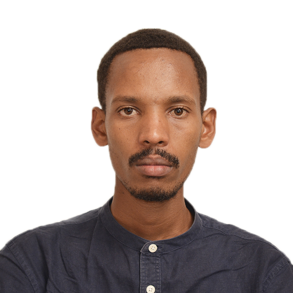

|
 |
Alexis NgogaAI Engineer & Solution Architect nalexis [at] alumni.cmu.edu |
MSc in Engineering Artificial Intelligence from Carnegie Mellon University Africa. AI Engineer and Solution Architect specializing in Agentic AI, Retrieval-Augmented Generation (RAG), and Geospatial Analytics for Earth Observation. I design and deploy multi-agent architectures, knowledge graphs, and automated AI workflows using MLOps/LLMOps pipelines for scalable, reliable, and explainable AI solutions.
I currently lead AI & Innovation at Evolution Inc, where I architect agentic systems and enterprise RAG integrations. In parallel, I serve as a Data Engineer at RwandAir, designing automated data pipelines and analytics infrastructure that support operational and executive decision-making.
My core interests lie in building AI systems, knowledge graphs, context-graphs, and cloud computing — designing architectures that turn complex data into structured, actionable intelligence at scale. I'm passionate about transforming geospatial and enterprise data into decisions that drive impact in agriculture, environmental monitoring, and digital health systems.
Previously, I conducted machine learning research at Carnegie Mellon University Africa on multisensor data fusion of satellite and drone imagery for crop mapping in smallholder farming systems, and was a Data Science Fellow with Analytics for a Better World (Netherlands), applying ML and geospatial analysis to urban heat patterns for sustainable urban development.
EI |
Lead AI & Innovation
Sept 2025 — Present
Leading AI workflow automation and agentic architecture design — orchestrating data pipelines, model lifecycle, and intelligent agents across the enterprise. Implementing MLOps/LLMOps practices (CI/CD, monitoring, governance, automated retraining). Deploying Retrieval-Augmented Generation (RAG) systems with vector databases and prompt orchestration frameworks.
|
RA |
Data Engineer
Aug 2025 — Present
Designing and automating scalable data pipelines, reducing data processing time through optimized ingestion from APIs and databases. Built analytics dashboards and system integrations to support operational and executive decision-making.
|
KCRC |
AI Research Consultant
June 2025 — Oct 2025 (Part-time)
Led research and development of AI and geospatial analytics solutions, including remote sensing, computer vision, and predictive modeling for agricultural decision support.
|
CMU |
Research Assistant
June 2024 — May 2025 (Part-time)
Conducted machine learning research on multisensor data fusion of satellite and drone imagery to enhance crop mapping and classification in smallholder farming systems. Developed and evaluated fusion algorithms (PCA, Laplacian pyramid, intensity-weighted normalization) and built end-to-end pipelines for image preprocessing, alignment, upsampling, and model training.
|
ABW |
Data Science Fellow
Sept 2024 — Nov 2024
Applied machine learning and geospatial data analysis to assess urban heat patterns for sustainable urban development.
|
NCG |
Nanda-Context-graph (Current)
Ongoing, 2026
A decentralized decision-trace graph for the NANDA Internet of Agents. Records why NANDA agents take actions — inputs, reasoning steps, tool calls, outputs, and causal links across multi-agent chains — and exposes them through a REST explainability API.
|
GSP |
GCP Storage Pilot — Cloud Storage Agent
Independent Project, 2026
Manage Google Cloud Storage through natural language. An AI agent that lets users create, browse, upload, organize, and manage GCS buckets and objects via conversational commands instead of console clicks or CLI flags.
|
AAS |
Agentic Autoscaler
Independent Project, 2026
Kubernetes-native operator that extends autoscaling beyond CPU/memory by fusing Prometheus metrics with log-stream intelligence and AI reasoning to make proactive, explainable scaling decisions.
|
LLM |
LLM-Powered Cloud Resource Management
CMU Africa Capstone Project, 2025
An AI-driven system for automated AWS resource allocation, cost optimization, and real-time architecture recommendations. Implemented LLMOps pipelines for continuous model evaluation, monitoring, and deployment of AI agents to support dynamic cloud management decisions.
|
EO |
Multisensor Data Fusion for Crop Mapping
Carnegie Mellon University Africa, 2024–2025
Machine learning research integrating satellite and drone imagery to enhance crop classification in smallholder farming systems. Developed fusion algorithms (PCA, Laplacian pyramid, intensity-weighted normalization) and end-to-end deep learning pipelines for preprocessing, alignment, and model training.
|
UH |
Urban Heat Pattern Analysis
Analytics for a Better World, 2024
Applied machine learning and geospatial data analysis to assess urban heat patterns and support sustainable urban development planning.
|